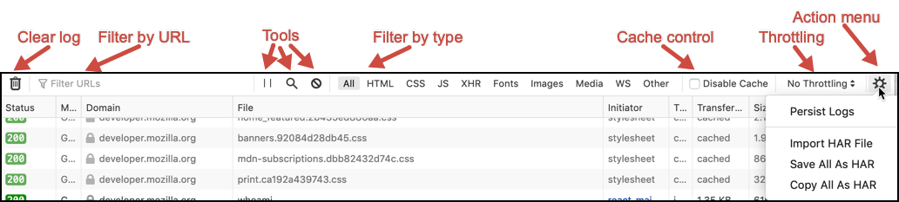
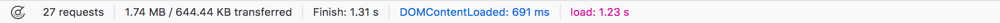

{{ToolsSidebar}}
The network monitor provides two toolbar areas, one above the main section, and another below.
The toolbar is at the top of the main network monitor window. (Prior to Firefox 77, this toolbar was arranged somewhat differently.)

It provides:
.har.A second toolbar area at the bottom of the network monitor provides:

The following articles cover different aspects of using the network monitor: